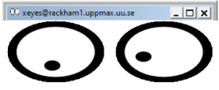

Login
Questions
How to reach UPPMAX clusters?
Can one use graphics?
Where do I arrive when I log in?
Objectives
We’ll relate our login session to the specific “area” in the cluster.
We’ll go through platform specific (Mac/Linux/Windows) ways to log in to UPPMAX.
Try yourself!
Note
If you lack a user account, visit the Getting started page
The login
When logging in to UPPMAX from your local computer you will arrive to your home folder at the login node.
This means that only light analysis and and calculations should be made here.
You will see this in the prompt after “@” as the clustername and a low number. For instance:
[<user>@rackham3 linux_tutorial]$
You willl ater learn how to reach the calculation nodes. Then the prompt states the node number with a single letter, like “r” for Rackham. For instance:
[<user>@r484 linux_tutorial]
MAC and LINUX users
Terminal
Download XQuartz or other X11 server for Mac OS
This is to enable graphics.
Start built-in Terminal.
$ ssh -Y <username>@rackham.uppmax.uu.se
“< >” prompts you to set the keyword specific for you or your needs. In the example above, this is basically your username.

Graphical file manager
For copying of files with sftp (secure file transfer protocol) between your client computer (where you are) and the cluster Filezilla can be the choice.

Problems with installations?
The built-in terminal without X11 is sufficient first days of the course!
Windows users
Most straight-forward
Install a ssh (secure shell) program with built-in X11 and sftp file manager
-
sftp frame makes it easy to move, upload and download files.
See section below.
-
If problem with the above installation, the putty.exe terminal is sufficient first days of the course!
No graphics.

MobaXterm

Start local terminal and a SSH session by:
$ ssh -Y <username>@rackham.uppmax.uu.se

Or even better, create and save a SSH session, as shown in image below.
This allows you to use MobaXterm as a file manager and to use the built-in graphical texteditor.
You can rename the session in the Bookmark settings tab.
Graphical file manager (Windows)
For copying of files between your client computer (where you are) and the cluster WinSCP can also be the choice.
Problems with installations?
The built-in terminal without X11 is sufficient first days of the course!
X11-forwarding from the command line (generally)
Graphics can be sent through the SSH connection you’re using to connect
Use primarily
ssh -Y <...>or secondaryssh -X <...>
The X servers that enables graphics are needed, as mentioned above!
When starting a graphical program, a new window will open, but your terminal will be “locked”.
Run using “
&” at the end to run it as a background process e.g. “xeyes &” or “gedit &”

Alternatively, use
<ctrl>-zto put e.g. gedit to sleep and type “bg” to make last process in background.
Login to Rackham, using your terminal
First try:
$ ssh -Y <username>@rackham.uppmax.uu.se
If you receive errors or warnings, instead try:
$ ssh <username>@rackham.uppmax.uu.se
If you do have X11 installed:
$ xeyes &
ThinLinc (all platforms!)
Both Rackham and Bianca offer graphical login.
This gives you a desktop environment, as if you were working on your own computer!
On web:

Or use the client (only for Rackham)
Try Thinlinc from web
Try the web version now if you don’t already have the software installed!
Keypoints
You reach UPPMAX clusters either using a terminal or Thinlinc
Graphics are included in Thinlinc and from terminal if you have enabled X11
When you log in from your local computer you will always arrive at a login node with limited resources.
You reach the calculations nodes from within the login node (See Submitting jobs section)